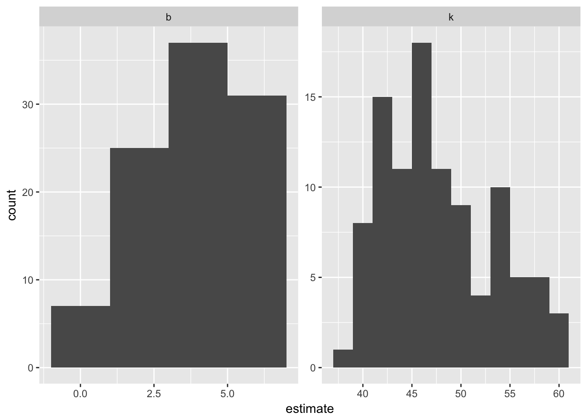
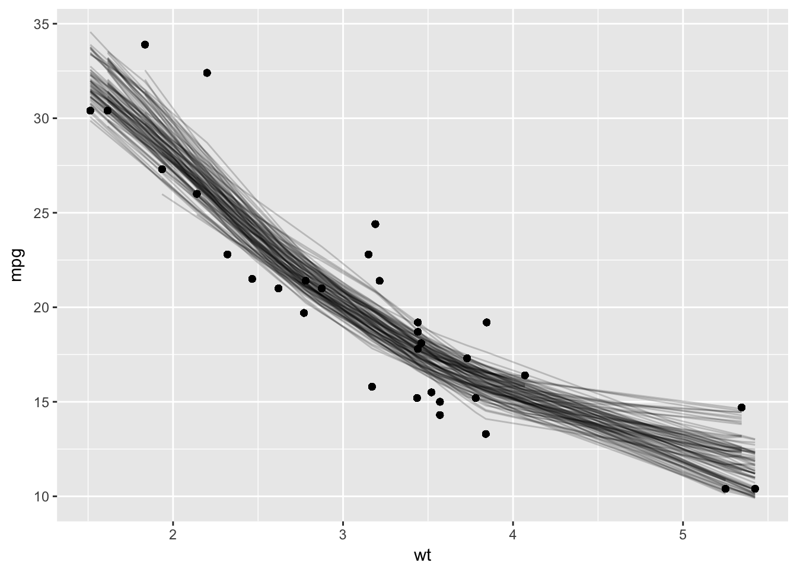

Tidy bootstrapping with dplyr+broom
Another place where combining model fits in a tidy way becomes useful is when performing bootstrapping or permutation tests. These approaches have been explored before, for instance by Andrew MacDonald here, and Hadley has explored efficient support for bootstrapping as a potential enhancement to dplyr. broom fits naturally with dplyr in performing these analyses.
Bootstrapping consists of randomly sampling a dataset with replacement, then performing the analysis individually on each bootstrapped replicate. The variation in the resulting estimate is then a reasonable approximation of the variance in your estimate.
Let’s say you want to fit a nonlinear model to the weight/mileage relationship in the mtcars dataset.
library(ggplot2)
data(mtcars)
ggplot(mtcars, aes(mpg, wt)) + geom_point()
You might use the method of nonlinear least squares (nls function) to fit a model.
nlsfit <- nls(mpg ~ k / wt + b, mtcars, start=list(k=1, b=0))
summary(nlsfit)##
## Formula: mpg ~ k/wt + b
##
## Parameters:
## Estimate Std. Error t value Pr(>|t|)
## k 45.829 4.249 10.786 7.64e-12 ***
## b 4.386 1.536 2.855 0.00774 **
## ---
## Signif. codes: 0 '***' 0.001 '**' 0.01 '*' 0.05 '.' 0.1 ' ' 1
##
## Residual standard error: 2.774 on 30 degrees of freedom
##
## Number of iterations to convergence: 1
## Achieved convergence tolerance: 1.967e-08ggplot(mtcars, aes(wt, mpg)) + geom_point() + geom_line(aes(y=predict(nlsfit)))
While this does provide a p-value and confidence intervals for the parameters, these are based on model assumptions that may not hold in real data. Bootstrapping is a popular method for providing confidence intervals and predictions that are more robust to the nature of the data. The function bootstrap in broom can be used to sample bootstrap replications. First, we construct 100 bootstrap replications of the data, each of which has been randomly sampled with replacement.
We use do to perform an nls fit on each replication, using tidy to recombine:
library(dplyr)
library(broom)
set.seed(2014)
bootnls <- mtcars %>% bootstrap(100) %>%
do(tidy(nls(mpg ~ k / wt + b, ., start=list(k=1, b=0))))This produces a summary of each replication, combined into one data.frame:
bootnls## # A tibble: 200 x 6
## # Groups: replicate [100]
## replicate term estimate std.error statistic p.value
## <int> <chr> <dbl> <dbl> <dbl> <dbl>
## 1 1 k 46.632502 4.026016 11.582790 1.343891e-12
## 2 1 b 4.360637 1.538267 2.834773 8.129582e-03
## 3 2 k 54.182476 4.964976 10.912939 5.756808e-12
## 4 2 b 1.004868 1.897195 0.529660 6.002459e-01
## 5 3 k 43.257212 3.564860 12.134338 4.222952e-13
## 6 3 b 4.833510 1.297909 3.724075 8.101898e-04
## 7 4 k 48.531351 4.456883 10.889079 6.069157e-12
## 8 4 b 3.509346 1.688979 2.077791 4.638415e-02
## 9 5 k 52.605099 5.662691 9.289771 2.472141e-10
## 10 5 b 3.344380 2.300411 1.453818 1.563791e-01
## # ... with 190 more rowsYou can then calculate confidence intervals (using what is called the percentile method):
alpha = .05
bootnls %>% group_by(term) %>% summarize(low=quantile(estimate, alpha / 2),
high=quantile(estimate, 1 - alpha / 2))## # A tibble: 2 x 3
## term low high
## <chr> <dbl> <dbl>
## 1 b 0.214338 6.538996
## 2 k 39.725501 58.699301Or you can use histograms to give you a more detailed idea of the uncertainty in each estimate:
library(ggplot2)
ggplot(bootnls, aes(estimate)) + geom_histogram(binwidth=2) + facet_wrap(~ term, scales="free")
Or you can use augment to visualize the uncertainty in the curve:
bootnls_aug <- mtcars %>% bootstrap(100) %>%
do(augment(nls(mpg ~ k / wt + b, ., start=list(k=1, b=0)), .))## Warning: Deprecated: please use `purrr::possibly()` instead## Warning: Deprecated: please use `purrr::possibly()` instead## Warning: Deprecated: please use `purrr::possibly()` instead## Warning: Deprecated: please use `purrr::possibly()` instead## Warning: Deprecated: please use `purrr::possibly()` instead## Warning: Deprecated: please use `purrr::possibly()` instead## Warning: Deprecated: please use `purrr::possibly()` instead## Warning: Deprecated: please use `purrr::possibly()` instead## Warning: Deprecated: please use `purrr::possibly()` instead## Warning: Deprecated: please use `purrr::possibly()` instead## Warning: Deprecated: please use `purrr::possibly()` instead## Warning: Deprecated: please use `purrr::possibly()` instead## Warning: Deprecated: please use `purrr::possibly()` instead## Warning: Deprecated: please use `purrr::possibly()` instead## Warning: Deprecated: please use `purrr::possibly()` instead## Warning: Deprecated: please use `purrr::possibly()` instead## Warning: Deprecated: please use `purrr::possibly()` instead## Warning: Deprecated: please use `purrr::possibly()` instead## Warning: Deprecated: please use `purrr::possibly()` instead## Warning: Deprecated: please use `purrr::possibly()` instead## Warning: Deprecated: please use `purrr::possibly()` instead## Warning: Deprecated: please use `purrr::possibly()` instead## Warning: Deprecated: please use `purrr::possibly()` instead## Warning: Deprecated: please use `purrr::possibly()` instead## Warning: Deprecated: please use `purrr::possibly()` instead## Warning: Deprecated: please use `purrr::possibly()` instead## Warning: Deprecated: please use `purrr::possibly()` instead## Warning: Deprecated: please use `purrr::possibly()` instead## Warning: Deprecated: please use `purrr::possibly()` instead## Warning: Deprecated: please use `purrr::possibly()` instead## Warning: Deprecated: please use `purrr::possibly()` instead## Warning: Deprecated: please use `purrr::possibly()` instead## Warning: Deprecated: please use `purrr::possibly()` instead## Warning: Deprecated: please use `purrr::possibly()` instead## Warning: Deprecated: please use `purrr::possibly()` instead## Warning: Deprecated: please use `purrr::possibly()` instead## Warning: Deprecated: please use `purrr::possibly()` instead## Warning: Deprecated: please use `purrr::possibly()` instead## Warning: Deprecated: please use `purrr::possibly()` instead## Warning: Deprecated: please use `purrr::possibly()` instead## Warning: Deprecated: please use `purrr::possibly()` instead## Warning: Deprecated: please use `purrr::possibly()` instead## Warning: Deprecated: please use `purrr::possibly()` instead## Warning: Deprecated: please use `purrr::possibly()` instead## Warning: Deprecated: please use `purrr::possibly()` instead## Warning: Deprecated: please use `purrr::possibly()` instead## Warning: Deprecated: please use `purrr::possibly()` instead## Warning: Deprecated: please use `purrr::possibly()` instead## Warning: Deprecated: please use `purrr::possibly()` instead## Warning: Deprecated: please use `purrr::possibly()` instead## Warning: Deprecated: please use `purrr::possibly()` instead## Warning: Deprecated: please use `purrr::possibly()` instead## Warning: Deprecated: please use `purrr::possibly()` instead## Warning: Deprecated: please use `purrr::possibly()` instead## Warning: Deprecated: please use `purrr::possibly()` instead## Warning: Deprecated: please use `purrr::possibly()` instead## Warning: Deprecated: please use `purrr::possibly()` instead## Warning: Deprecated: please use `purrr::possibly()` instead## Warning: Deprecated: please use `purrr::possibly()` instead## Warning: Deprecated: please use `purrr::possibly()` instead## Warning: Deprecated: please use `purrr::possibly()` instead## Warning: Deprecated: please use `purrr::possibly()` instead## Warning: Deprecated: please use `purrr::possibly()` instead## Warning: Deprecated: please use `purrr::possibly()` instead## Warning: Deprecated: please use `purrr::possibly()` instead## Warning: Deprecated: please use `purrr::possibly()` instead## Warning: Deprecated: please use `purrr::possibly()` instead## Warning: Deprecated: please use `purrr::possibly()` instead## Warning: Deprecated: please use `purrr::possibly()` instead## Warning: Deprecated: please use `purrr::possibly()` instead## Warning: Deprecated: please use `purrr::possibly()` instead## Warning: Deprecated: please use `purrr::possibly()` instead## Warning: Deprecated: please use `purrr::possibly()` instead## Warning: Deprecated: please use `purrr::possibly()` instead## Warning: Deprecated: please use `purrr::possibly()` instead## Warning: Deprecated: please use `purrr::possibly()` instead## Warning: Deprecated: please use `purrr::possibly()` instead## Warning: Deprecated: please use `purrr::possibly()` instead## Warning: Deprecated: please use `purrr::possibly()` instead## Warning: Deprecated: please use `purrr::possibly()` instead## Warning: Deprecated: please use `purrr::possibly()` instead## Warning: Deprecated: please use `purrr::possibly()` instead## Warning: Deprecated: please use `purrr::possibly()` instead## Warning: Deprecated: please use `purrr::possibly()` instead## Warning: Deprecated: please use `purrr::possibly()` instead## Warning: Deprecated: please use `purrr::possibly()` instead## Warning: Deprecated: please use `purrr::possibly()` instead## Warning: Deprecated: please use `purrr::possibly()` instead## Warning: Deprecated: please use `purrr::possibly()` instead## Warning: Deprecated: please use `purrr::possibly()` instead## Warning: Deprecated: please use `purrr::possibly()` instead## Warning: Deprecated: please use `purrr::possibly()` instead## Warning: Deprecated: please use `purrr::possibly()` instead## Warning: Deprecated: please use `purrr::possibly()` instead## Warning: Deprecated: please use `purrr::possibly()` instead## Warning: Deprecated: please use `purrr::possibly()` instead## Warning: Deprecated: please use `purrr::possibly()` instead## Warning: Deprecated: please use `purrr::possibly()` instead## Warning: Deprecated: please use `purrr::possibly()` instead## Warning: Deprecated: please use `purrr::possibly()` instead## Warning: Deprecated: please use `purrr::possibly()` instead## Warning: Deprecated: please use `purrr::possibly()` instead## Warning: Deprecated: please use `purrr::possibly()` instead## Warning: Deprecated: please use `purrr::possibly()` instead## Warning: Deprecated: please use `purrr::possibly()` instead## Warning: Deprecated: please use `purrr::possibly()` instead## Warning: Deprecated: please use `purrr::possibly()` instead## Warning: Deprecated: please use `purrr::possibly()` instead## Warning: Deprecated: please use `purrr::possibly()` instead## Warning: Deprecated: please use `purrr::possibly()` instead## Warning: Deprecated: please use `purrr::possibly()` instead## Warning: Deprecated: please use `purrr::possibly()` instead## Warning: Deprecated: please use `purrr::possibly()` instead## Warning: Deprecated: please use `purrr::possibly()` instead## Warning: Deprecated: please use `purrr::possibly()` instead## Warning: Deprecated: please use `purrr::possibly()` instead## Warning: Deprecated: please use `purrr::possibly()` instead## Warning: Deprecated: please use `purrr::possibly()` instead## Warning: Deprecated: please use `purrr::possibly()` instead## Warning: Deprecated: please use `purrr::possibly()` instead## Warning: Deprecated: please use `purrr::possibly()` instead## Warning: Deprecated: please use `purrr::possibly()` instead## Warning: Deprecated: please use `purrr::possibly()` instead## Warning: Deprecated: please use `purrr::possibly()` instead## Warning: Deprecated: please use `purrr::possibly()` instead## Warning: Deprecated: please use `purrr::possibly()` instead## Warning: Deprecated: please use `purrr::possibly()` instead## Warning: Deprecated: please use `purrr::possibly()` instead## Warning: Deprecated: please use `purrr::possibly()` instead## Warning: Deprecated: please use `purrr::possibly()` instead## Warning: Deprecated: please use `purrr::possibly()` instead## Warning: Deprecated: please use `purrr::possibly()` instead## Warning: Deprecated: please use `purrr::possibly()` instead## Warning: Deprecated: please use `purrr::possibly()` instead## Warning: Deprecated: please use `purrr::possibly()` instead## Warning: Deprecated: please use `purrr::possibly()` instead## Warning: Deprecated: please use `purrr::possibly()` instead## Warning: Deprecated: please use `purrr::possibly()` instead## Warning: Deprecated: please use `purrr::possibly()` instead## Warning: Deprecated: please use `purrr::possibly()` instead## Warning: Deprecated: please use `purrr::possibly()` instead## Warning: Deprecated: please use `purrr::possibly()` instead## Warning: Deprecated: please use `purrr::possibly()` instead## Warning: Deprecated: please use `purrr::possibly()` instead## Warning: Deprecated: please use `purrr::possibly()` instead## Warning: Deprecated: please use `purrr::possibly()` instead## Warning: Deprecated: please use `purrr::possibly()` instead## Warning: Deprecated: please use `purrr::possibly()` instead## Warning: Deprecated: please use `purrr::possibly()` instead## Warning: Deprecated: please use `purrr::possibly()` instead## Warning: Deprecated: please use `purrr::possibly()` instead## Warning: Deprecated: please use `purrr::possibly()` instead## Warning: Deprecated: please use `purrr::possibly()` instead## Warning: Deprecated: please use `purrr::possibly()` instead## Warning: Deprecated: please use `purrr::possibly()` instead## Warning: Deprecated: please use `purrr::possibly()` instead## Warning: Deprecated: please use `purrr::possibly()` instead## Warning: Deprecated: please use `purrr::possibly()` instead## Warning: Deprecated: please use `purrr::possibly()` instead## Warning: Deprecated: please use `purrr::possibly()` instead## Warning: Deprecated: please use `purrr::possibly()` instead## Warning: Deprecated: please use `purrr::possibly()` instead## Warning: Deprecated: please use `purrr::possibly()` instead## Warning: Deprecated: please use `purrr::possibly()` instead## Warning: Deprecated: please use `purrr::possibly()` instead## Warning: Deprecated: please use `purrr::possibly()` instead## Warning: Deprecated: please use `purrr::possibly()` instead## Warning: Deprecated: please use `purrr::possibly()` instead## Warning: Deprecated: please use `purrr::possibly()` instead## Warning: Deprecated: please use `purrr::possibly()` instead## Warning: Deprecated: please use `purrr::possibly()` instead## Warning: Deprecated: please use `purrr::possibly()` instead## Warning: Deprecated: please use `purrr::possibly()` instead## Warning: Deprecated: please use `purrr::possibly()` instead## Warning: Deprecated: please use `purrr::possibly()` instead## Warning: Deprecated: please use `purrr::possibly()` instead## Warning: Deprecated: please use `purrr::possibly()` instead## Warning: Deprecated: please use `purrr::possibly()` instead## Warning: Deprecated: please use `purrr::possibly()` instead## Warning: Deprecated: please use `purrr::possibly()` instead## Warning: Deprecated: please use `purrr::possibly()` instead## Warning: Deprecated: please use `purrr::possibly()` instead## Warning: Deprecated: please use `purrr::possibly()` instead## Warning: Deprecated: please use `purrr::possibly()` instead## Warning: Deprecated: please use `purrr::possibly()` instead## Warning: Deprecated: please use `purrr::possibly()` instead## Warning: Deprecated: please use `purrr::possibly()` instead## Warning: Deprecated: please use `purrr::possibly()` instead## Warning: Deprecated: please use `purrr::possibly()` instead## Warning: Deprecated: please use `purrr::possibly()` instead## Warning: Deprecated: please use `purrr::possibly()` instead## Warning: Deprecated: please use `purrr::possibly()` instead## Warning: Deprecated: please use `purrr::possibly()` instead## Warning: Deprecated: please use `purrr::possibly()` instead## Warning: Deprecated: please use `purrr::possibly()` instead## Warning: Deprecated: please use `purrr::possibly()` instead## Warning: Deprecated: please use `purrr::possibly()` instead## Warning: Deprecated: please use `purrr::possibly()` instead## Warning: Deprecated: please use `purrr::possibly()` instead## Warning: Deprecated: please use `purrr::possibly()` instead## Warning: Deprecated: please use `purrr::possibly()` instead## Warning: Deprecated: please use `purrr::possibly()` instead## Warning: Deprecated: please use `purrr::possibly()` instead## Warning: Deprecated: please use `purrr::possibly()` instead## Warning: Deprecated: please use `purrr::possibly()` instead## Warning: Deprecated: please use `purrr::possibly()` instead## Warning: Deprecated: please use `purrr::possibly()` instead## Warning: Deprecated: please use `purrr::possibly()` instead## Warning: Deprecated: please use `purrr::possibly()` instead## Warning: Deprecated: please use `purrr::possibly()` instead## Warning: Deprecated: please use `purrr::possibly()` instead## Warning: Deprecated: please use `purrr::possibly()` instead## Warning: Deprecated: please use `purrr::possibly()` instead## Warning: Deprecated: please use `purrr::possibly()` instead## Warning: Deprecated: please use `purrr::possibly()` instead## Warning: Deprecated: please use `purrr::possibly()` instead## Warning: Deprecated: please use `purrr::possibly()` instead## Warning: Deprecated: please use `purrr::possibly()` instead## Warning: Deprecated: please use `purrr::possibly()` instead## Warning: Deprecated: please use `purrr::possibly()` instead## Warning: Deprecated: please use `purrr::possibly()` instead## Warning: Deprecated: please use `purrr::possibly()` instead## Warning: Deprecated: please use `purrr::possibly()` instead## Warning: Deprecated: please use `purrr::possibly()` instead## Warning: Deprecated: please use `purrr::possibly()` instead## Warning: Deprecated: please use `purrr::possibly()` instead## Warning: Deprecated: please use `purrr::possibly()` instead## Warning: Deprecated: please use `purrr::possibly()` instead## Warning: Deprecated: please use `purrr::possibly()` instead## Warning: Deprecated: please use `purrr::possibly()` instead## Warning: Deprecated: please use `purrr::possibly()` instead## Warning: Deprecated: please use `purrr::possibly()` instead## Warning: Deprecated: please use `purrr::possibly()` instead## Warning: Deprecated: please use `purrr::possibly()` instead## Warning: Deprecated: please use `purrr::possibly()` instead## Warning: Deprecated: please use `purrr::possibly()` instead## Warning: Deprecated: please use `purrr::possibly()` instead## Warning: Deprecated: please use `purrr::possibly()` instead## Warning: Deprecated: please use `purrr::possibly()` instead## Warning: Deprecated: please use `purrr::possibly()` instead## Warning: Deprecated: please use `purrr::possibly()` instead## Warning: Deprecated: please use `purrr::possibly()` instead## Warning: Deprecated: please use `purrr::possibly()` instead## Warning: Deprecated: please use `purrr::possibly()` instead## Warning: Deprecated: please use `purrr::possibly()` instead## Warning: Deprecated: please use `purrr::possibly()` instead## Warning: Deprecated: please use `purrr::possibly()` instead## Warning: Deprecated: please use `purrr::possibly()` instead## Warning: Deprecated: please use `purrr::possibly()` instead## Warning: Deprecated: please use `purrr::possibly()` instead## Warning: Deprecated: please use `purrr::possibly()` instead## Warning: Deprecated: please use `purrr::possibly()` instead## Warning: Deprecated: please use `purrr::possibly()` instead## Warning: Deprecated: please use `purrr::possibly()` instead## Warning: Deprecated: please use `purrr::possibly()` instead## Warning: Deprecated: please use `purrr::possibly()` instead## Warning: Deprecated: please use `purrr::possibly()` instead## Warning: Deprecated: please use `purrr::possibly()` instead## Warning: Deprecated: please use `purrr::possibly()` instead## Warning: Deprecated: please use `purrr::possibly()` instead## Warning: Deprecated: please use `purrr::possibly()` instead## Warning: Deprecated: please use `purrr::possibly()` instead## Warning: Deprecated: please use `purrr::possibly()` instead## Warning: Deprecated: please use `purrr::possibly()` instead## Warning: Deprecated: please use `purrr::possibly()` instead## Warning: Deprecated: please use `purrr::possibly()` instead## Warning: Deprecated: please use `purrr::possibly()` instead## Warning: Deprecated: please use `purrr::possibly()` instead## Warning: Deprecated: please use `purrr::possibly()` instead## Warning: Deprecated: please use `purrr::possibly()` instead## Warning: Deprecated: please use `purrr::possibly()` instead## Warning: Deprecated: please use `purrr::possibly()` instead## Warning: Deprecated: please use `purrr::possibly()` instead## Warning: Deprecated: please use `purrr::possibly()` instead## Warning: Deprecated: please use `purrr::possibly()` instead## Warning: Deprecated: please use `purrr::possibly()` instead## Warning: Deprecated: please use `purrr::possibly()` instead## Warning: Deprecated: please use `purrr::possibly()` instead## Warning: Deprecated: please use `purrr::possibly()` instead## Warning: Deprecated: please use `purrr::possibly()` instead## Warning: Deprecated: please use `purrr::possibly()` instead## Warning: Deprecated: please use `purrr::possibly()` instead## Warning: Deprecated: please use `purrr::possibly()` instead## Warning: Deprecated: please use `purrr::possibly()` instead## Warning: Deprecated: please use `purrr::possibly()` instead## Warning: Deprecated: please use `purrr::possibly()` instead## Warning: Deprecated: please use `purrr::possibly()` instead## Warning: Deprecated: please use `purrr::possibly()` instead## Warning: Deprecated: please use `purrr::possibly()` instead## Warning: Deprecated: please use `purrr::possibly()` instead## Warning: Deprecated: please use `purrr::possibly()` instead## Warning: Deprecated: please use `purrr::possibly()` instead## Warning: Deprecated: please use `purrr::possibly()` instead## Warning: Deprecated: please use `purrr::possibly()` instead## Warning: Deprecated: please use `purrr::possibly()` instead## Warning: Deprecated: please use `purrr::possibly()` instead## Warning: Deprecated: please use `purrr::possibly()` instead## Warning: Deprecated: please use `purrr::possibly()` instead## Warning: Deprecated: please use `purrr::possibly()` instead## Warning: Deprecated: please use `purrr::possibly()` instead## Warning: Deprecated: please use `purrr::possibly()` instead## Warning: Deprecated: please use `purrr::possibly()` instead## Warning: Deprecated: please use `purrr::possibly()` instead## Warning: Deprecated: please use `purrr::possibly()` instead## Warning: Deprecated: please use `purrr::possibly()` instead## Warning: Deprecated: please use `purrr::possibly()` instead## Warning: Deprecated: please use `purrr::possibly()` instead## Warning: Deprecated: please use `purrr::possibly()` instead## Warning: Deprecated: please use `purrr::possibly()` instead## Warning: Deprecated: please use `purrr::possibly()` instead## Warning: Deprecated: please use `purrr::possibly()` instead## Warning: Deprecated: please use `purrr::possibly()` instead## Warning: Deprecated: please use `purrr::possibly()` instead## Warning: Deprecated: please use `purrr::possibly()` instead## Warning: Deprecated: please use `purrr::possibly()` instead## Warning: Deprecated: please use `purrr::possibly()` instead## Warning: Deprecated: please use `purrr::possibly()` instead## Warning: Deprecated: please use `purrr::possibly()` instead## Warning: Deprecated: please use `purrr::possibly()` instead## Warning: Deprecated: please use `purrr::possibly()` instead## Warning: Deprecated: please use `purrr::possibly()` instead## Warning: Deprecated: please use `purrr::possibly()` instead## Warning: Deprecated: please use `purrr::possibly()` instead## Warning: Deprecated: please use `purrr::possibly()` instead## Warning: Deprecated: please use `purrr::possibly()` instead## Warning: Deprecated: please use `purrr::possibly()` instead## Warning: Deprecated: please use `purrr::possibly()` instead## Warning: Deprecated: please use `purrr::possibly()` instead## Warning: Deprecated: please use `purrr::possibly()` instead## Warning: Deprecated: please use `purrr::possibly()` instead## Warning: Deprecated: please use `purrr::possibly()` instead## Warning: Deprecated: please use `purrr::possibly()` instead## Warning: Deprecated: please use `purrr::possibly()` instead## Warning: Deprecated: please use `purrr::possibly()` instead## Warning: Deprecated: please use `purrr::possibly()` instead## Warning: Deprecated: please use `purrr::possibly()` instead## Warning: Deprecated: please use `purrr::possibly()` instead## Warning: Deprecated: please use `purrr::possibly()` instead## Warning: Deprecated: please use `purrr::possibly()` instead## Warning: Deprecated: please use `purrr::possibly()` instead## Warning: Deprecated: please use `purrr::possibly()` instead## Warning: Deprecated: please use `purrr::possibly()` instead## Warning: Deprecated: please use `purrr::possibly()` instead## Warning: Deprecated: please use `purrr::possibly()` instead## Warning: Deprecated: please use `purrr::possibly()` instead## Warning: Deprecated: please use `purrr::possibly()` instead## Warning: Deprecated: please use `purrr::possibly()` instead## Warning: Deprecated: please use `purrr::possibly()` instead## Warning: Deprecated: please use `purrr::possibly()` instead## Warning: Deprecated: please use `purrr::possibly()` instead## Warning: Deprecated: please use `purrr::possibly()` instead## Warning: Deprecated: please use `purrr::possibly()` instead## Warning: Deprecated: please use `purrr::possibly()` instead## Warning: Deprecated: please use `purrr::possibly()` instead## Warning: Deprecated: please use `purrr::possibly()` instead## Warning: Deprecated: please use `purrr::possibly()` instead## Warning: Deprecated: please use `purrr::possibly()` instead## Warning: Deprecated: please use `purrr::possibly()` instead## Warning: Deprecated: please use `purrr::possibly()` instead## Warning: Deprecated: please use `purrr::possibly()` instead## Warning: Deprecated: please use `purrr::possibly()` instead## Warning: Deprecated: please use `purrr::possibly()` instead## Warning: Deprecated: please use `purrr::possibly()` instead## Warning: Deprecated: please use `purrr::possibly()` instead## Warning: Deprecated: please use `purrr::possibly()` instead## Warning: Deprecated: please use `purrr::possibly()` instead## Warning: Deprecated: please use `purrr::possibly()` instead## Warning: Deprecated: please use `purrr::possibly()` instead## Warning: Deprecated: please use `purrr::possibly()` instead## Warning: Deprecated: please use `purrr::possibly()` instead## Warning: Deprecated: please use `purrr::possibly()` instead## Warning: Deprecated: please use `purrr::possibly()` instead## Warning: Deprecated: please use `purrr::possibly()` instead## Warning: Deprecated: please use `purrr::possibly()` instead## Warning: Deprecated: please use `purrr::possibly()` instead## Warning: Deprecated: please use `purrr::possibly()` instead## Warning: Deprecated: please use `purrr::possibly()` instead## Warning: Deprecated: please use `purrr::possibly()` instead## Warning: Deprecated: please use `purrr::possibly()` instead## Warning: Deprecated: please use `purrr::possibly()` instead## Warning: Deprecated: please use `purrr::possibly()` instead## Warning: Deprecated: please use `purrr::possibly()` instead## Warning: Deprecated: please use `purrr::possibly()` instead## Warning: Deprecated: please use `purrr::possibly()` instead## Warning: Deprecated: please use `purrr::possibly()` instead## Warning: Deprecated: please use `purrr::possibly()` instead## Warning: Deprecated: please use `purrr::possibly()` instead## Warning: Deprecated: please use `purrr::possibly()` instead## Warning: Deprecated: please use `purrr::possibly()` instead## Warning: Deprecated: please use `purrr::possibly()` instead## Warning: Deprecated: please use `purrr::possibly()` instead## Warning: Deprecated: please use `purrr::possibly()` instead## Warning: Deprecated: please use `purrr::possibly()` instead## Warning: Deprecated: please use `purrr::possibly()` instead## Warning: Deprecated: please use `purrr::possibly()` instead## Warning: Deprecated: please use `purrr::possibly()` instead## Warning: Deprecated: please use `purrr::possibly()` instead## Warning: Deprecated: please use `purrr::possibly()` instead## Warning: Deprecated: please use `purrr::possibly()` instead## Warning: Deprecated: please use `purrr::possibly()` instead## Warning: Deprecated: please use `purrr::possibly()` instead## Warning: Deprecated: please use `purrr::possibly()` instead## Warning: Deprecated: please use `purrr::possibly()` instead## Warning: Deprecated: please use `purrr::possibly()` instead## Warning: Deprecated: please use `purrr::possibly()` instead## Warning: Deprecated: please use `purrr::possibly()` instead## Warning: Deprecated: please use `purrr::possibly()` instead## Warning: Deprecated: please use `purrr::possibly()` instead## Warning: Deprecated: please use `purrr::possibly()` instead## Warning: Deprecated: please use `purrr::possibly()` instead## Warning: Deprecated: please use `purrr::possibly()` instead## Warning: Deprecated: please use `purrr::possibly()` instead## Warning: Deprecated: please use `purrr::possibly()` instead## Warning: Deprecated: please use `purrr::possibly()` instead## Warning: Deprecated: please use `purrr::possibly()` instead## Warning: Deprecated: please use `purrr::possibly()` instead## Warning: Deprecated: please use `purrr::possibly()` instead## Warning: Deprecated: please use `purrr::possibly()` instead## Warning: Deprecated: please use `purrr::possibly()` instead## Warning: Deprecated: please use `purrr::possibly()` instead## Warning: Deprecated: please use `purrr::possibly()` instead## Warning: Deprecated: please use `purrr::possibly()` instead## Warning: Deprecated: please use `purrr::possibly()` instead## Warning: Deprecated: please use `purrr::possibly()` instead## Warning: Deprecated: please use `purrr::possibly()` instead## Warning: Deprecated: please use `purrr::possibly()` instead## Warning: Deprecated: please use `purrr::possibly()` instead## Warning: Deprecated: please use `purrr::possibly()` instead## Warning: Deprecated: please use `purrr::possibly()` instead## Warning: Deprecated: please use `purrr::possibly()` instead## Warning: Deprecated: please use `purrr::possibly()` instead## Warning: Deprecated: please use `purrr::possibly()` instead## Warning: Deprecated: please use `purrr::possibly()` instead## Warning: Deprecated: please use `purrr::possibly()` instead## Warning: Deprecated: please use `purrr::possibly()` instead## Warning: Deprecated: please use `purrr::possibly()` instead## Warning: Deprecated: please use `purrr::possibly()` instead## Warning: Deprecated: please use `purrr::possibly()` instead## Warning: Deprecated: please use `purrr::possibly()` instead## Warning: Deprecated: please use `purrr::possibly()` instead## Warning: Deprecated: please use `purrr::possibly()` instead## Warning: Deprecated: please use `purrr::possibly()` instead## Warning: Deprecated: please use `purrr::possibly()` instead## Warning: Deprecated: please use `purrr::possibly()` instead## Warning: Deprecated: please use `purrr::possibly()` instead## Warning: Deprecated: please use `purrr::possibly()` instead## Warning: Deprecated: please use `purrr::possibly()` instead## Warning: Deprecated: please use `purrr::possibly()` instead## Warning: Deprecated: please use `purrr::possibly()` instead## Warning: Deprecated: please use `purrr::possibly()` instead## Warning: Deprecated: please use `purrr::possibly()` instead## Warning: Deprecated: please use `purrr::possibly()` instead## Warning: Deprecated: please use `purrr::possibly()` instead## Warning: Deprecated: please use `purrr::possibly()` instead## Warning: Deprecated: please use `purrr::possibly()` instead## Warning: Deprecated: please use `purrr::possibly()` instead## Warning: Deprecated: please use `purrr::possibly()` instead## Warning: Deprecated: please use `purrr::possibly()` instead## Warning: Deprecated: please use `purrr::possibly()` instead## Warning: Deprecated: please use `purrr::possibly()` instead## Warning: Deprecated: please use `purrr::possibly()` instead## Warning: Deprecated: please use `purrr::possibly()` instead## Warning: Deprecated: please use `purrr::possibly()` instead## Warning: Deprecated: please use `purrr::possibly()` instead## Warning: Deprecated: please use `purrr::possibly()` instead## Warning: Deprecated: please use `purrr::possibly()` instead## Warning: Deprecated: please use `purrr::possibly()` instead## Warning: Deprecated: please use `purrr::possibly()` instead## Warning: Deprecated: please use `purrr::possibly()` instead## Warning: Deprecated: please use `purrr::possibly()` instead## Warning: Deprecated: please use `purrr::possibly()` instead## Warning: Deprecated: please use `purrr::possibly()` instead## Warning: Deprecated: please use `purrr::possibly()` instead## Warning: Deprecated: please use `purrr::possibly()` instead## Warning: Deprecated: please use `purrr::possibly()` instead## Warning: Deprecated: please use `purrr::possibly()` instead## Warning: Deprecated: please use `purrr::possibly()` instead## Warning: Deprecated: please use `purrr::possibly()` instead## Warning: Deprecated: please use `purrr::possibly()` instead## Warning: Deprecated: please use `purrr::possibly()` instead## Warning: Deprecated: please use `purrr::possibly()` instead## Warning: Deprecated: please use `purrr::possibly()` instead## Warning: Deprecated: please use `purrr::possibly()` instead## Warning: Deprecated: please use `purrr::possibly()` instead## Warning: Deprecated: please use `purrr::possibly()` instead## Warning: Deprecated: please use `purrr::possibly()` instead## Warning: Deprecated: please use `purrr::possibly()` instead## Warning: Deprecated: please use `purrr::possibly()` instead## Warning: Deprecated: please use `purrr::possibly()` instead## Warning: Deprecated: please use `purrr::possibly()` instead## Warning: Deprecated: please use `purrr::possibly()` instead## Warning: Deprecated: please use `purrr::possibly()` instead## Warning: Deprecated: please use `purrr::possibly()` instead## Warning: Deprecated: please use `purrr::possibly()` instead## Warning: Deprecated: please use `purrr::possibly()` instead## Warning: Deprecated: please use `purrr::possibly()` instead## Warning: Deprecated: please use `purrr::possibly()` instead## Warning: Deprecated: please use `purrr::possibly()` instead## Warning: Deprecated: please use `purrr::possibly()` instead## Warning: Deprecated: please use `purrr::possibly()` insteadggplot(bootnls_aug, aes(wt, mpg)) + geom_point() +
geom_line(aes(y=.fitted, group=replicate), alpha=.2)
With only a few small changes, one could easily perform bootstrapping with other kinds of predictive or hypothesis testing models, since the tidy and augment functions works for many statistical outputs. As another example, you could use smooth.spline:
smoothspline_aug <- mtcars %>% bootstrap(100) %>%
do(augment(smooth.spline(.$wt, .$mpg, df=4), .))
ggplot(smoothspline_aug, aes(wt, mpg)) + geom_point() +
geom_line(aes(y=.fitted, group=replicate), alpha=.2)